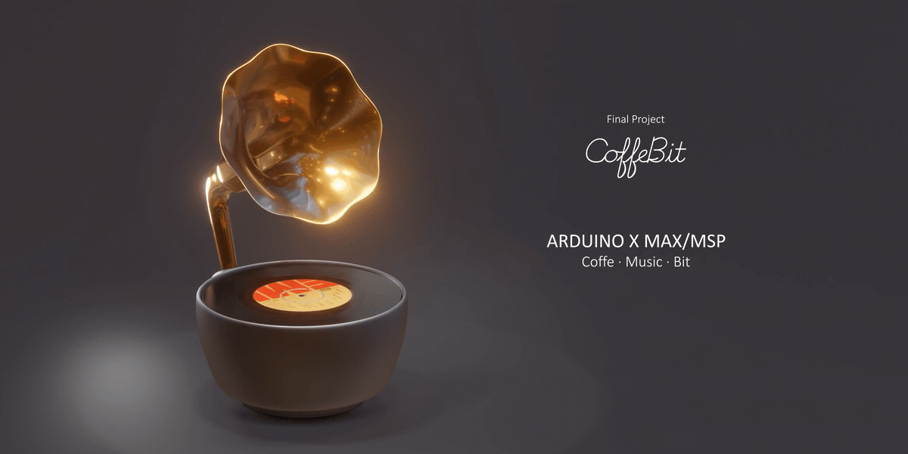

Final Project by Coffe Bit
Wizard Floird
ARDUINO X MAX/MSP
Wizard Florid （中文名精灵花语）是一款别致的蓝牙音乐播放器，由专注于情感化智能设计100天的匠人品牌caffe bit出品。Caffe bit是班里最早开始探索高科技打碟的匠人小组，源于对音乐艺术的热爱，不断尝试拓展音乐播放器的边界，从十根钢丝的舞蹈律动，到五彩斑斓的黑色炫酷界面，不断调整试听体验，成为深受年轻人喜爱的音响品牌。
Wizard Florid （中文名精灵花语）是一款别致的蓝牙音乐播放器，由专注于情感化智能设计100天的匠人品牌caffe bit出品。Caffe bit是班里最早开始探索高科技打碟的匠人小组，源于对音乐艺术的热爱，不断尝试拓展音乐播放器的边界，从十根钢丝的舞蹈律动，到五彩斑斓的黑色炫酷界面，不断调整试听体验，成为深受年轻人喜爱的音响品牌。